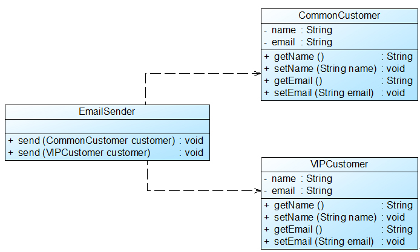

1. 概述#
支持可维护性，提高系统的可复用性
2.设计原则#
2.1 单一职责原则 Single Responsibility Principle#
一个类只负责一个功能领域中的相应职责，只负责一个功能领域中的相应职责。
承担的责任越多，那被复用的可能性就越小。多职责意味着是把多个类耦合了起来

CustomerDataChart类包含了与数据库的连接，查询客户信息和创建显示图标三大方面的功能，应该将其分为三个类，分别进行处理

DBUtil 负责连接数据库
CustomerDao 负责操作数据库中的Customer表
CustomerDataChart 负责图表的生成的显示
2.2 开闭原则 Open-Closed Principle#
软件实体应对拓展开放，而对修改关闭。软件实体应该尽量在不修改原有代码的情况下进行扩展。
为了满足开闭原则，需要对系统进行抽象化设计！！！为系统定义一个相对稳定的抽象层，而后将不同的实现行为移至具体的实现层中完成。如果需要修改系统的行为，无须对抽象层进行任何改动，只需要增加新的具体类来实现新的业务功能即可，实现在不修改已有代码的基础上扩展系统的功能，达到开闭原则的要求。


加一个抽象类，每一种Chart可以extends这个抽象类，然后做具体的实现。在ChartDisplay类中，可以实例化Chart类，调用其display()方法来显示对应的图表。当要改变的时候，加一个实现类，在客户端注入这个对象即可。
2.3 里氏代换原则 Liskov Substitution Principle#
所有引用基类对象的地方能够透明地使用其子类的对象
在软件中，将一个基类的对象替换成其子类对象，程序将不会产生任何错误和异常，反过来则不成立。
里氏代换原则是实现开闭原则的重要方式之一。由于使用基类对象的地方都可以使用子类，因此在程序中尽量使用基类类型来对对象进行定义，而在运行时再确定其子类类型，用子类对象来替换父类对象。
2.3.1 注意事项#
- 子类的所有方法必须在父类中声明，或子类必须实现父类中声明的所有方法。根据里氏代换原则，为了保证系统的扩展性，在程序中通常使用父类来进行定义，如果一个方法只存在子类中，在父类中不提供相应的声明，则无法在以父类定义的对象中使用该方法。
- 我们在运用里氏代换原则时，尽量把父类设计为抽象类或者接口，让子类继承父类或实现父接口，并实现在父类中声明的方法，运行时，子类实例替换父类实例，我们可以很方便地扩展系统的功能，同时无须修改原有子类的代码，增加新的功能可以通过增加一个新的子类来实现。里氏代换原则是开闭原则的具体实现手段之一。


通过增加抽象类，让子类来替换父类的方式来进行编程，增强代码的复用性。
2.4 依赖倒转原则 Dependence Inversion Principle#
抽象不应该依赖于细节，细节应该依赖于抽象
针对接口编程，而不是针对实现编程。
在程序代码中传递参数时或者在关联关系中，尽量引用层次高的抽象层类，即，使用接口和抽象类进行变量类型声明、参数类型声明、方法返回类型声明，以及数据类型的转换等，而不要用具体类来做这些事情。
为了确保该原则的应用，一个具体类应当只实现接口或抽象类中声明过的方法，而不要给出多余的方法，否则将无法调用到在子类中增加的新方法。
在实现依赖倒转原则时，我们需要针对抽象层编程，而将具体类的对象通过依赖注入(DependencyInjection, DI)的方式注入到其他对象中，依赖注入是指当一个对象要与其他对象发生依赖关系时，通过抽象来注入所依赖的对象。常用的注入方式有三种，分别是：
- 构造注入
构造注入是指通过构造函数来传入具体类的对象
- 设值注入（Setter注入）
设值注入是指通过Setter方法来传入具体类的对象
- 接口注入
而接口注入是指通过在接口中声明的业务方法来传入具体类的对象。
这些方法在定义时使用的是抽象类型，在运行时再传入具体类型的对象，由子类对象来覆盖父类对象。
加了一个抽象的DataConvertor，面向它来进行编程，然后在Config里面定义到底需要哪一个Convertor的具体实现类


2.5 接口隔离原则 Interface Segragation Principle#
使用多个专门接口，而不使用单一的总接口。即客户端不应该依赖那些它不需要的接口。
每个接口应该承担一种相对独立的角色
尽量提供窄接口，根据不同的职责分别放在不同的小接口当中
在使用接口隔离原则时，我们需要注意控制接口的粒度，接口不能太小，如果太小会导致系统中接口泛滥，不利于维护；接口也不能太大，太大的接口将违背接口隔离原则，灵活性较差，使用起来很不方便。一般而言，接口中仅包含为某一类用户定制的方法即可，不应该强迫客户依赖于那些它们不用的方法。


2.6 合成复用原则 Composite Reuse Principle#
尽量使用对象组合，而不是继承来达到复用的目的
在一个新的对象里，通过关联关系（组合关系和聚合关系）来使用一些已有对象，使之成为新对象的一部分。新对象通过委派调用已有对象的方法达到复用功能的目的。
先考虑组合，再考虑继承
组合/聚合可以使系统更加灵活，降低类与类之间的耦合度，一个类的变化对其他类造成的影响相对较少；其次才考虑继承，在使用继承时，需要严格遵循里氏代换原则，有效使用继承会有助于对问题的理解，降低复杂度，而滥用继承反而会增加系统构建和维护的难度以及系统的复杂度，因此需要慎重使用继承复用
继承复用会破坏系统的封装性，因为继承会将基类的实现细节暴露给子类——> 白箱复用。如果基类发生改变，子类的实现也必须改变。这样子做没有足够的灵活性。
组合或者聚合关系是将已有对象纳入到新对象当中，使之成为新对象的一部分。新对象可以调用已有对象的功能，但是具体实现是对其不可见的。合成复用可以在运行时动态进行，新对象可以动态的引用与成员对象类型相同的其他对象。
对于”Has A”关系，使用合成复用，对于”Is A”关系，使用继承


2.7 迪米特法则 Law of Demeter#
一个软件实体应当尽可能少地与其他实体发生相互作用，这是对软件实体之间通信的限制。
当其中一个模块发生修改时，会尽量少地影响其他模块，扩展会相对容易。
只与直接的朋友通信，包括：
- 当前对象本身
- 以参数形式传入到当前对象方法中的对象
- 当前对象的成员对象
- 当前对象所创建的对象
如果其中的一个对象需要调用另一个对象的某一个方法的话，可以通过第三者转发这个调用。简言之，就是通过引入一个合理的第三者来降低现有对象之间的耦合度。
！！！ 通过引入中间件来降低整体的耦合度